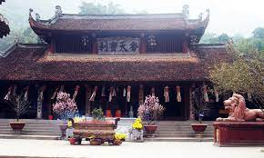

Chùa Yên Tử Quảng Ninh là một ngôi chùa nổi tiếng được yêu thích bậc nhất ở Việt Nam. Ngôi chùa này nằm ở thôn Nam
Mẫu, xã Thượng Yên Công, TP. Uông Bí, Quảng Ninh. Nơi đây được Phật hoàng Trần Nhân Tông chọn làm nơi tu hành sau
khi truyền ngôi và thành lập ra phái Thiền viện Trúc Lâm Yên Tử (một dòng Phật giáo đặc trưng ở Việt Nam).
được nhiều du khách tìm đến mỗi dịp lễ tết để cầu bình an cho gia đình.
Yên Tử cách thị xã Uông Bí. Tỉnh Quảng Ninh 14 km về phía tây bắc. Núi Cánh Gà phía nam,
dãy núi Bảo Đài ở phía bắc như những thành quách cổ xưa mở rộng cánh cửa dẫn khách hành hương bước vào thế giới Yên
Tử>
Cả quần thể kiến trúc chùa Hương nằm rải rác trong thung lũng suối Yến,
gồm có chùa Ngoài, và chùa Trong.
Điều đầu tiên khiến nhiều du khách bất ngờ chắc chắn sẽ là kiến trúc cực kỳ độc đáo của chùa Yên Tử. Chùa sở hữu
kiến trúc đậm chất Phật Giáo với nhiều chi tiết đặc trưng như cổng tam quan hai tầng tám mái uy nghiêm, mái chùa
thì được lợp các tấm ngói vảy uốn cong hình đầu đao, cột chùa thì sử dụng chất liệu gỗ lim cứng cáp kết hợp với
các phiến đá lớn bao quanh dưới chân.
Tượng đồng Phật Hoàng Trần Nhân Tông trên núi Yên Tử
Không gian bên trong chùa thì cực kỳ mát mẻ, các gian đều có thiết kế rất tinh tế được trang trí bằng nhiều chi tiết
sơn son thếp vàng. Từng bức tượng Phật, án thờ, bức khảm, cửa,... đều được chạm khắc tinh xảo, tạo cảm giác rất sinh
động và không kém phần uy nghiêm.
Lối vào chùa yên tử
Có 2 phương pháp có thể di chuyển lên núi Yên Tử là Đi bộ và đi cáp treo. Tùy thuộc vào thể trạng sức khỏe và
nhu cầu mà bạn nên lựa chọn phương thức di chuyển cho phù hợp
Đi bộ lên núi Yên Tử: Nếu bạn có đam mê khám phá và sức khỏe thì đây là lựa chọn không tồi. Quãng đường đi chuyển
lên núi Yên Tử dài khoảng 6km với các bậc thang. Trong quá trình đi bạn sẽ thoải mái ngắm cảnh 2 bên đường, rừng
thông, rừng trúc,... Chắc chắn nếu bạn đi bộ trải nghiệm leo núi Yên Tử sẽ không làm bạn thất vọng
Đi núi Yên Tử bằng cáp treo: Nếu bạn đã leo núi Yên Tử và cảm thấy phong cảnh núi không còn thú vị, hay sức khỏe
và thời gian không cho phép thì có thể lựa chọn di chuyển bằng cáp treo. Đường cáp treo dài khoảng 1,2km và cao
450. Việc đi cáp treo lên núi Yên Tử sẽ vô cùng nhanh chóng. Giá vé cáp treo Yên Tử khứ hồi toàn tuyến là
350.000đ/1 người. Mua riêng vé một chiều là 200.000đ/1 người/1 tuyến. Với người già trên 70 tuổi, thương binh và
trẻ em dưới 1m2 sẽ được miễn phí vé cáp treo Yên Tử
4. Những danh thắng của chùa Yên Tử
Lễ hội chùa yên tử
Lễ hội xuân Yên Tử được tổ chức vào ngày mùng 10 tháng Giêng âm lịch đến hết tháng 3 âm lịch hàng năm, đây là
trải nghiệm thu vị nhất mà bạn không nên bỏ qua. Bởi khi tổ chức lễ hội thì du khách thập phương sẽ đổ về du xuân
và du lịch tâm linh tại đây
Vào dịp này, nếu đến đây, bạn sẽ được chứng kiến và tham gia những hoạt động văn hóa nghệ thuật. Những hoạt động
đặc sắc và mang đậm tính cổ truyền, chẳng hạn như: Lễ dâng hương cúng Phật, bái Tổ Trúc Lâm, Lễ khai ấn “Dấu
thiêng Chùa Đồng”,…
Nếu lên được đến đỉnh núi Yên Tử có Chùa Yên Tử để hành hương thì mới được gọi là trọn vẹn. Đứng trước cảnh núi
non hùng vĩ, bao la, rộng lớn, cùng với một không gian thiêng liêng, sẽ mang đến cho bạn cảm giác an yên giữa đất
trời thiên nhiên. Không có điều gì làm phiền bạn nữa
Rừng quốc gia Yên Tử
Rừng quốc gia Yên Tử sở hữu diện tích khá rộng, lên tới 2.783 ha, được xem là địa điểm lý tưởng để bạn khám phá
và trải nghiệm khi du lịch chùa Yên Tử đấy nhé
Tại đây không chỉ lưu giữ, mà còn bảo tồn nhiều loài động vật cùng nhiều nguồn gen sinh vật vô cùng quý hiếm. Một
địa điểm hoàn hảo dành cho những ai đam mê khám phá thiên nhiên.
Địa chỉ rừng quốc gia Yên Tử: Xã Thượng Yên Công và Phương Đông, Thành phố Uông Bí, tỉnh Quảng Ninh

Chùa Trình
Khác với chùa Yên Tử, chùa Trình lại có vị trí nằm ở một sườn đồi làng Bí Thượng. Chùa Trình được xây dựng theo
hướng Tây Nam, kiến trúc theo kiểu chữ Nhất (-). Ngôi chùa có diện tích gần 20m2.Trải qua nhiều biến cố thăng
trầm, thì vào năm 1993, chùa Trình được xây dựng lại với lối kiến trúc nhà cấp 4, bao gồm 3 gian. Đến năm 1999,
chùa mới được tu sửa lại một lần nữa, trồng khang trang hơn nhiều so với trước đó.
Suối Giải Oan
Nghe cái tên chắc bạn cũng đoán được một phần nào đó bí ẩn phía sau con suối này rồi phải không
Theo nhiều chuyện dân gian kể lại rằng, vì thương xót nhà vua, nên các phi tần đã lên núi xin vua quay lại triều
đình, nhưng cho dù là ai lên thì cũng bị nhà vua từ chối. Nên các phi tần chỉ đành đắm mình xuống suối tự vẫn. Từ
đó Suối Giải Oan trở thành nơi siêu độ cho các phi tần của vua nhà Trần
Bên trong suối, còn có chùa Giải Oan, hay còn gọi là chùa Hạ. Ngôi chùa này là một trong những chùa chính nằm trên
cung đường đến với chùa Yên Tử
Khi đặt chân đến đây, thứ làm bạn choáng ngợp đó là 6 ngọn tháp vững chãi. Một trong số đó dùng để thờ vua Trần
Nhân Tông, mộ sư Pháp Loa và sư Huyền Quang
Thiền Viện Trúc Lâm Yên Tử
Bên cạnh chùa Yên Tử, thì Thiền viện Trúc Lâm Yên Tử còn được gọi là chùa Lân là điểm đến bạn nên tham quan.
Không chỉ mang khung cảnh núi rừng bát ngát, không gian thoáng đãng, yên bình
Mà nơi đây còn là một trong những điểm tâm linh là nơi để giảng đạo cho các tăng ni phật tử. Trần Nhân Tông, Pháp
Loa và Huyền Quang thường đến đây để giảng kinh, độ tăng.